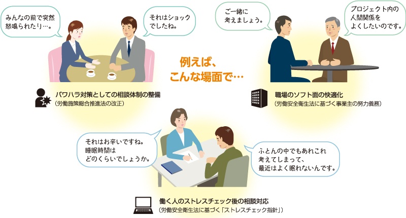
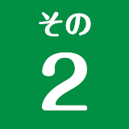
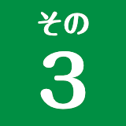
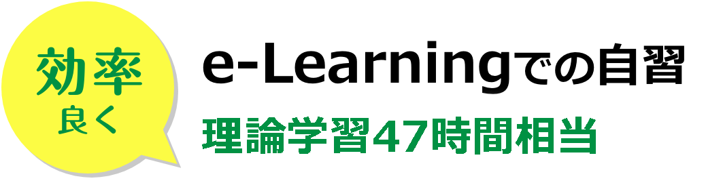
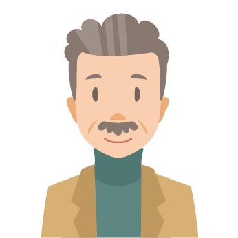
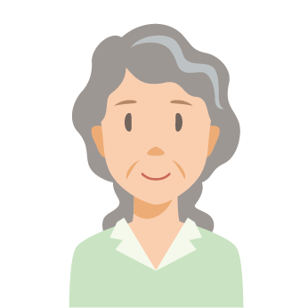
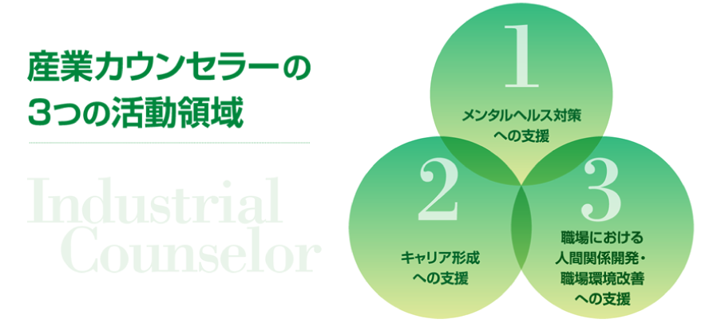
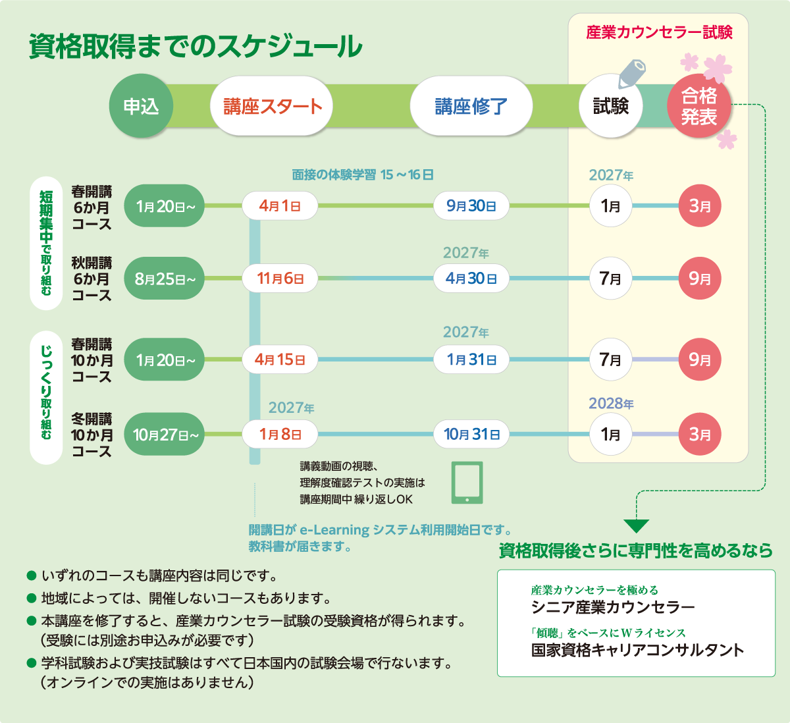

ABOUT『産業カウンセラー』になって得られるスキル
働く人たちや組織が抱える問題を自ら解決できるよう、心理的な手法を用いて支援するカウンセラーです。その活動は多岐にわたり、産業、労働現場に通じたプロフェッショナルな支援者として、国や自治体、企業等から専門的な役割を期待されています。ハラスメント、メンタル不調、人間関係や職場環境に関する問題の解決が喫緊の課題となっている今、その活動がますます求められています。
また、産業カウンセラー養成講座で学ぶカウンセリングの基本スキルである「傾聴」は、ビジネスはもとより”人”と接するあらゆる場面や日常で広く必要とされるスキルです。

説明会・無料体験講座 開催情報
全国で説明会・無料体験講座を実施しています。オンライン開催は全国どこからでもご参加いただけます。参加された方は受講料が5,500円(税込)割引となります！
※募集期間中または募集期間直近の説明会にご参加後、講座をお申込みいただいた場合に割引適用となります。
AREA日程および開催方法（対面またはオンライン）
各主催支部のWebサイトをご確認ください。オンライン開催はあらゆる地域から参加できます。
会場ごとの詳しい開催日程・受付状況・お申し込みは、講座日程マスタ（会場と日程・お申し込み）でご覧いただけます。
- 全 国オンライン
- 北海道エリア対面
- 東北エリア対面・オンライン
- 上信越エリア対面・オンライン
- 北関東エリア対面
- 東関東エリア対面
- 東京エリア対面・オンライン
- 神奈川エリア対面
- 中部エリア対面・オンライン
- 関西エリア対面・オンライン
- 中国エリアTEL・オンライン
- 四国エリア対面・オンライン
- 九州エリア対面・オンライン
- 沖縄エリア対面
NEWS新着情報
過去のお知らせ（アーカイブ）→「全国オンライン無料説明会」の開催日時は決まり次第、順次掲載いたします。現在はお申込みを受け付けておりません。
- 新型コロナウイルス感染症の拡大防止のため、安全対策を施し講座を実施します。
- 面接の体験学習をオンライン（Zoom利用）で行なうコースを開設しています。一部スクーリングのあるコースと、全日程オンラインで行なうコースとがあります。
WHAT産業カウンセラー養成講座とは
一般社団法人日本産業カウンセラー協会の産業カウンセラー養成講座は、カウンセリングの基礎である「傾聴」の態度・技法と、支援活動に必要な知識を学べる講座です。カウンセリング教育60年以上の実績を持つ独自プログラムにより、理論だけでなく、「現場で活かす」チカラを身につけることができます。
FEATURES産業カウンセラー養成講座の特徴


LEARNING理論と体験
効率良く、深く学べる学習スタイルです。

STYLE面接の体験学習は3つの学習スタイルから選べます
MOVIE動画で見る産業カウンセラー養成講座
VOICE受講者の声
受講して得られたもの
私は人事業務の中で社員の相談を受ける際、自分の聴き方・応え方など、聴く姿勢全般について不安があり受講を決めたのですが、受講を終えた今は自信と前向きな気持ちを持って相談対応に取り組めています。私は日曜６ヶ月コースを選んだため、体力的に辛く感じることがありましたが、毎回深い学びがあり、大変価値のあるものだったと感じています。傾聴を学びたい方には心からお勧めします。
受講した当初は、ここまで自分が変われると思いませんでした。この講座は、自分自身の成長につながり、今後の生き方の幅が大きく拡がります。多くの皆さんに、傾聴の大切さ、自己理解の重要性を知っていただきたいと思います。

面接の体験学習では、同じ目的をもったかけがえのない仲間が出来ました。貴重な期間でした。
話を聴く事についての認識が変わりました。話を聴くスキルを身につける事で相手を理解でき、より良い対人関係を築くきっかけとなると思います。
受講を終え振り返ってみると、たくさんの苦悩が生まれ、仲間との分かち合いがあり、自分自身ととことん向き合った半年だったと思います。決して楽な講座ではありませんが、ここで学んだことはこの先の人生に大きな意味を持つだろうなと感じています。是非多くの人に体験して欲しいと思います。
自分ひとりでは辿りつけなかった。同じ志を持った仲間たちからたくさんの学びがあり、仲間たちと貴重なお時間を過ごせたことは、かけがいのない財産になりました。受講して本当に良かったです。
講座の参加メンバーとの異業種間交流になるだけでなく世代間の意識、感覚なども吸収することができて、仕事では経験できないいい出会いの場所でした。
傾聴は非常に難しいことですが、一歩踏み出して学びを深め力を蓄えることで、誰かの悩みに寄り添うことができます。また、自己理解するとで、コミュニケーションや今後の仕事の取組み方も良い方向に転換していくような気がします。
この講座の良さは、受講しないと分からないと思いますが、受講料以上の、お金では買えない貴重な経験と、仲間と出会え、思いきって受講して良かったと思います。
カウンセリング業務をこれまで我流で年数十回行ってきましたが、今回講座を受けてそれは違うものだったということが良くわかりました。傾聴など誰でもできると思いきや、実は奥が深く、大変難しい。講座を通してこれまでの自分の考え方がかなり変化しました。変化していく自分を客観的に見られる贅沢な時間でもありました。
受講をおすすめしたい理由
自分自身について深く考えることができ、また、今後のキャリアや人生についてもじっくりと考えるとても良い機会です。傾聴の基本はカウンセリングだけでなく、子育てであれば子供との会話、会社であれば人との接し方についてもいろいろ気づきが出てくるので、ぜひ、講座を楽しんでください。
私は産業カウンセラーとは関係無い業務に正社員や派遣社員として従事してきましたので、今回はバックグラウンドを持たずに受講しました。覚えることや知識を実践することの難しさに凹むことも多かったですが、講師の先生方が暖かく指導してくださいましたし、他の受講メンバーとの面接体験実習を通して、来談者中心療法のプロセスに触れ、実際にその素晴らしさを実感することが出来ました。受講修了したところから、本当のスタートになりますが、仲閒と一緒に成長出来ると思い、ワクワクしています。未経験でも大丈夫と思います。一緒に悩みながら成長していく仲閒になっていただけるのをお待ちしています。
自分の周りの人のためにも、自分自身のためにも、この講座を受けてから社会に出たかったな！と思いました。
本気で自分の壁を取っ払いたい人、自分と向き合いたい人、生きづらさを抱えている人にはおすすめです。仕事にいかせるというより、今後の自分の生き方に大きく影響してくると感じています。きつかったけど取り組んでよかったと思っています。
人事の方には特に、実務上で役立てられる講座だと思います。

受講する前と後では感情の向き合い方が変わります。難しいですが、やるだけの価値はあると体感しました。少しでも人の気持ちに寄り添いたい方は勇気を出して挑戦してみてください。
産業カウンセラーを目指している方だけでなく、人との円滑な関係構築を望んでいる人にもオススメしたいです。話を聴けるようになるって、円滑なコミュニケーションをするためのスタートラインなのだということを学びました。そして多くの皆様にもそれを実感していただきたいです。体験学習はもちろん、e-Learning（座学）でもいろいろな側面から物事を考えられるようになる力を身につけられました。時間とお金は確かにかかりますが、それだけの価値はあると私は感じました！
傾聴スキルを身につけ、会社組織や身辺の悩みやお困りごとを抱えている方々に寄り添うことは社会的意義があると思います。この養成講座はその初歩段階に位置しますが、資格取得後にも多様な研修講座が開催され役に立つと思います。ただ、費用面が高いですが、給付金対象だったりもするので、多少敷居は低くなるのではないでしょうか。
コミュニケーション能力や自己理解を深める意味でも、本講座を受講することは非常に有効と感じます。
100時間以上の実技講習は、他では得ることのできない貴重な経験です。
「資格を活かして今後こうなりたい」と具体的に固まっていない方でも、参加する価値はあると思います。興味のある方はぜひ挑戦してみてはいかがでしょうか。
MESSAGE実技指導者のメッセージ
私たちは、60年の実績とノウハウのもと、独自の「面接の体験学習」カリキュラムに基づく実技指導を提供しております。

日本産業カウンセラー協会は、1960年の創立以来、「働く人と組織を支えるための活動」を続けています。1971年に始まった「産業カウンセラー」試験から現在まで、約78,000人の産業カウンセラーが誕生しており、カウンセラー養成にも長い歴史と実績があります。産業カウンセラーの呼称を使用して活動できるのは、当協会の資格試験に合格し、資格登録会員となった方のみです。
SCHEDULE資格取得までのスケジュール

EXAM産業カウンセラー試験（予定）
| 1月試験 | 学科試験 2027年1月24日(日)（予定） 実技試験 2027年1月30日(土)・31日(日)（予定) |
|---|---|
| 6月・7月試験 | 学科試験 2027年6月（予定） 実技試験 2027年7月（予定） |
OUTLINE講座概要
6か月コース と 10か月コース の比較
| 項目 | 6か月コース短期集中で学ぶ | 10か月コースじっくり学ぶ・夜間も選べる |
|---|---|---|
| 講座期間 | 春講座：4月上旬 〜 9月 秋講座：11月 〜 翌年4月 |
春講座：4月中旬 〜 翌年1月 冬講座：1月 〜 10月 |
| 講座実施日 | 土曜のみ／日曜のみ／平日のみ | 土曜のみ／日曜のみ／平日のみ／平日夜間のみ |
| 通学回数 | 15〜16回 | 15〜16回（通常） 33〜36回（夜間・短時間教室） |
| 面接の体験学習 （受講形式） |
通学コース／オンラインコース／フルオンラインコース から選択（学習スタイルはこちら） 通学：1日6〜7時間程度 ／ オンライン：1日3〜7時間程度（一部通学あり） | |
| 受講料 | 352,000円（教材費を含む・税込） ※割引制度・教育訓練給付あり | |
| 試験の受験時期 | 年2回：1月／6・7月 | |
※ 上表は現行サイト「6か月コースと10か月コースの比較」ページの内容を、講座概要のなかに統合したものです。年度ごとの具体的な開講日・申込受付期間は下表およびエリア別の会場・日程（63コース）でご確認ください。
| 受講資格（条件） | 産業カウンセラーをめざす、受講開始時点で成人年齢に達している方 ※この講座を修了すると、産業カウンセラー試験の受験資格が得られます。 |
|---|---|
| 講座期間 ＜2026年度＞ | 春開講6か月コース：2026年4月1日（水）〜 2026年9月30日（水） 春開講10か月コース：2026年4月15日（水）〜 2027年1月31日（日） 秋開講6か月コース：2026年11月6日（金）〜 2027年4月30日（金） 冬開講10か月コース：2027年1月8日（金）〜 2027年10月31日（日） ※新型コロナウイルス感染症拡大防止等の理由により、面接の体験学習について日程変更や一部オンライン化する場合があります。 |
| 申込受付期間 ＜2026年度＞ | 春開講6か月コース：受付終了 春開講10か月コース：受付終了 秋開講6か月コース：8月25日（火）10：00開始 冬開講10か月コース：10月27日（火）10：00開始 ※定員に達し次第、受付を終了します。 |
| 修了条件 | ・面接の体験学習計104時間中90時間以上出席すること ・面接の体験学習に関する課題学習6課題を提出し、このうち4課題についてはABCD4段階評価においてAまたはBの評価を受けること（2課題は評価対象外） ・講義動画視聴後、指定された章について「ふりかえり」を提出すること ・理解度確認テスト各章において6割以上正答すること（6割未満の場合は再実施） |
| 補講 | 面接の体験学習にやむを得ず14時間を超えて欠席した場合には、24時間を限度に補講を受けることができます。補講料は6時間あたり11,000円（税込）です。 |
| 講座内容 | ①面接の体験学習104時間(15〜16日）。ただし、短時間コースは26日〜35日 ②面接の体験学習に関する課題学習6課題 28時間相当 ホームワーク ③講義動画視聴 34時間相当 e-Learning ④理解度確認テスト 13時間相当 e-Learning |
理論科目（全23科目）
- 1産業カウンセラーとは
- 2コンプライアンスと倫理
- 3産業界におけるカウンセリングの歩み
- 4カウンセリングとは何か
- 5傾聴の意義と技法
- 6カウンセリングのプロセスと面接記録
- 7カウンセリングのトレーニングの意義と実際
- 8逐語記録の作成とその検討
- 9事例検討とスーパービジョン
- 10カウンセリング理論の源流および主要な理論と方法
- 11カウンセリングのさまざまな理論と方法および今日的課題
- 12こころのメカニズム
- 13パーソナリティ心理学と心理アセスメント
- 14精神医学の基本
- 15産業組織の心理学
- 16コミュニケーションの基本
- 17コミュニティ心理学の基本
- 18産業社会の動向と働く意識の変化
- 19人事労務管理の基礎知識と人材マネジメントの現状
- 20産業カウンセラーの支援活動に関わる法
- 21職場における人間関係開発・職場環境改善への支援
- 22職場におけるメンタルヘルス対策への支援
- 23キャリア形成への支援
FEE受講料・お支払い・教育訓練給付
※講座で、録音機材と提出用の記憶媒体（ICレコーダ、SDカード等）が必要となります。受講料の他に、教材として各自でご用意いただきます。スマホによる録音は、情報漏洩リスクからご使用いただけません。詳細は面接の体験学習の際に実技指導者から説明があります。
| 申込方法 | ウェブまたは郵送 ※オンラインコースはウェブのみとなります。 |
|---|---|
| お支払い方法 | １.お振込み(一括) ／ ２.学費ローン制度 学費ローンお申込サイトのトップページにて「産業カウンセラー」で検索してください。※支払い時の手数料はご負担ください。 |
| 教育訓練給付制度 | 当講座は一般教育訓練給付制度指定講座です。（明示書：6か月コース／10か月コース） |
| テキスト | 産業カウンセラー養成講座テキスト『産業カウンセリング』Ⅰ・Ⅱ（一般社団法人日本産業カウンセラー協会編） ※テキストは開講日に発送いたします。※障がいにより紙媒体に印刷されたテキストのご利用が困難な方にはテキストデイジー（DAISY3）版を用意しています。事前にお申込み先支部にご相談ください。 |
e-Learning 学習環境について
・インターネットに接続しているパソコンまたはモバイル端末（タブレット、スマホ）を使用します。
・体験版（講義動画、理解度確認テスト）にて事前に正常に動作するかを必ずご確認のうえ、お申込みください。
・本表に記載のないものは動作保証外となります。
| ■PCの動作環境／OS | ブラウザ |
|---|---|
| Microsoft Windows 11 | Microsoft Edge, Google Chrome |
| macOS 15 Sequoia | Safari |
| ■モバイル端末（スマホ／タブレット）／OS | ブラウザ |
|---|---|
| Android 15 | Google Chrome, Microsoft Edge |
| iOS (iPhone) 18 | Safari |
| iPadOS (iPad) 18 | Safari |
【面接の体験学習】(1)機器等：インターネットに接続しているパソコン (2)アプリケーション：PC用Zoom Workplace ※ChromebookはZoomの機能が制約されるため、ご使用いただけません。
【課題学習】(1)機器等：e-Learningシステム利用可能な環境（課題学習の提出は、e-Learningシステムへアップロードする方法を取ります）(2)アプリケーション：Microsoft Word ※教室によってはExcelも使用します。
＊モバイル端末は下記理由により基本的にご使用いただけません。・面接の体験学習で使用するZoomの機能が限られる。・課題学習で、MS Word文書の加工がしにくい。
その他
・受講確定後に、会場の変更はできません。
・お申込みに際しては、「受講約款」「個人情報の取り扱いについて」をよくお読みいただき同意のうえ手続きしてください。
・オンラインコースをお申込みの際には、「オンラインコースに関わる同意書」をよくお読みのうえお手続きください。
・教材等の送付先は日本国内のみとなります。
・面接の体験学習は日本時間で実施します。
・学科試験および実技試験はすべて日本国内の試験会場で行ないます。（オンラインでの実施はありません）
・「緊急事態宣言」等発出時等には、日程の延期、講座の中断、面接の体験学習のオンライン化等の対応を取る場合があります。こうした対応を取る場合には、日本産業カウンセラー協会において決定し、ご連絡いたします。
FAQQ&A
産業カウンセラーになってできる仕事やキャリアコンサルタントなど他職業との違い、お申し込み方法やキャンセルなどよくいただく質問に詳しくお答えしています。